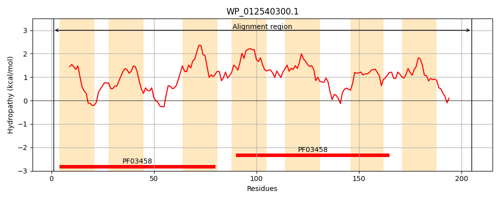
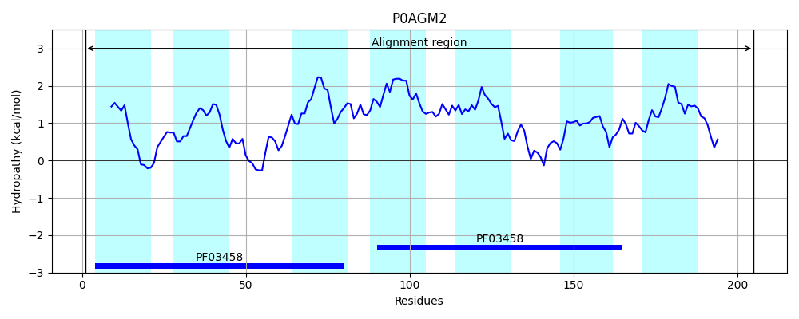
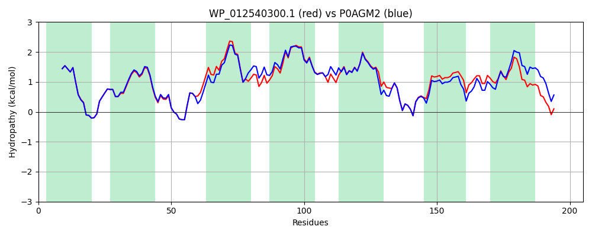

Hit Accession: P0AGM2
Hit TCID: 1.A.62.2.3
Hit Description: gnl|BL_ORD_ID|8869 gnl|TC-DB|P0AGM2|1.A.62.2.3 UPF0126 inner membrane protein YicG OS=Escherichia coli (strain K12) GN=yicG PE=1 SV=1
Mach Len: 205
e:0.000000
Query TMS Count : 7
Hit TMS Count: 7
TMS-Overlap Score: 6.250000
Predicted Substrates:None
BLAST Alignment:
Score: 928 , Bit scores: 362 bits, E-value: 2.1e-129, Alignment length: 205, Percentage identity: 86
Query: 1 MLLHVLYLIGITAEAMTGALAAGRRRMDTFGVIIIATATALGGGSVRDILLGHYPLGWVKHPEYVIIVAVAAVLTTIAAPVMPHLRRLFLVLDALGLIVFSIIGAQIALDMGEGPIIASIAAVITGVFGGVLRDMFCKRIPLVFQKELYAGISFAAAVLYIALQHYVSSHDVVVLATLLFGFTARMLALRWKLGLPVFHYTHDSH 205
MLLH+LYL+GITAEAMTGALAAGRRRMDTFGVIIIATATA+GGGSVRDILLGHYPLGWVKHPEYVIIVA AAVLTTI APVMP+LR++FLVLDALGL+VFSIIGAQ+ALDMG GPIIA +AAV TGVFGGVLRDMFCKRIPLVFQKELYAG+SFA+AVLYIALQHYVS+HDVV+++TL+FGF AR+LALR KLGLPVF+Y+H+ H
Sbjct: 1 MLLHILYLVGITAEAMTGALAAGRRRMDTFGVIIIATATAIGGGSVRDILLGHYPLGWVKHPEYVIIVATAAVLTTIVAPVMPYLRKVFLVLDALGLVVFSIIGAQVALDMGHGPIIAVVAAVTTGVFGGVLRDMFCKRIPLVFQKELYAGVSFASAVLYIALQHYVSNHDVVIISTLVFGFFARLLALRLKLGLPVFYYSHEGH 205 | Protein Hydropathy Plots: |
|---|
|  |  |
Pairwise Alignment-Hydropathy Plot:
|
|---|
|  |